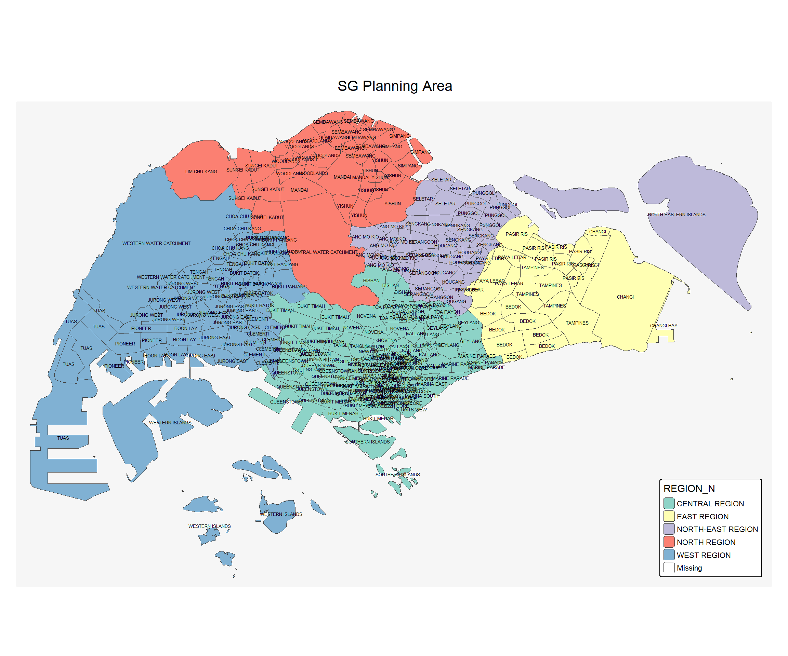
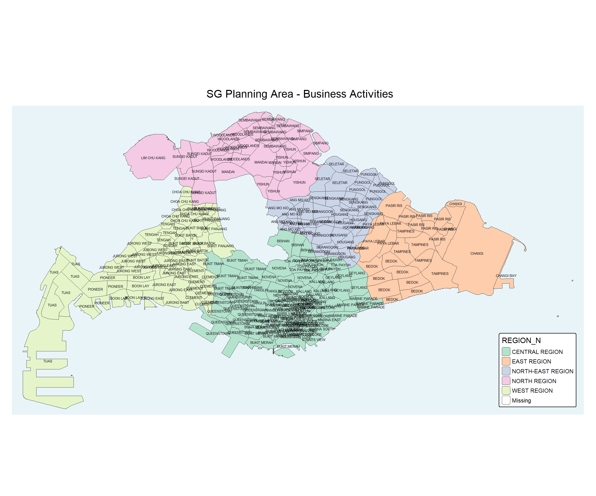

Take-Home Exercise 1: Geospatial Analytics for Public Good
1 1. Research Focus
This study looks at where and how new businesses are emerging in Singapore. By applying spatial point pattern analysis, I will explore:
how densely new businesses are distributed across the island,
whether clustering occurs in certain regions or industries,
how business locations relate to one another spatially, and
how these patterns shift between 2024 and the first half of 2025.
Through this, the analysis highlights short-term trends in Singapore’s commercial landscape and uncovers the early signs of potential growth hubs.
2 2. Objectives
This study aims to analyse the spatial and spatio-temporal dynamics of newly established businesses in Singapore during the first half of 2025. The key objectives are:
Locate patterns of emergence — Identify where and when new businesses are concentrated, highlighting clusters and spatial trends relevant to urban planning and economic development.
Uncover interactions — Examine how businesses relate beyond simple density, including clustering of similar industries, temporal shifts, and structural changes in commercial zones.
Support decision-making — Translate spatial insights into knowledge that can guide planning, resource allocation, and strategies for fostering sustainable business growth.
3 3. Installing and Loading R Packages
Before starting the analysis, it is important to ensure that the required R packages are available in the working environment. These packages provide the tools for handling geospatial data, performing spatial point pattern analysis, creating maps, and producing visual outputs.
4 4. The Data
For this exercise, the analysis uses three primary datasets, all publicly available from data.gov.sg:
4.1 4.a. Master Plan 2019 Subzone Boundary (No Sea) (KML)
- Contains the polygon boundaries of Singapore’s subzones (excluding sea areas).
- Provides the spatial framework for mapping and analyzing business locations relative to urban subzones.
mppa <- st_read("data/MasterPlan2019SubzoneBoundaryNoSeaKML.kml")Reading layer `URA_MP19_SUBZONE_NO_SEA_PL' from data source
`C:\deepikarcodes\ISSS626-GAA\Take_Home_Exercises\Take_Home_Ex01\data\MasterPlan2019SubzoneBoundaryNoSeaKML.kml'
using driver `KML'
Simple feature collection with 332 features and 2 fields
Geometry type: MULTIPOLYGON
Dimension: XY
Bounding box: xmin: 103.6057 ymin: 1.158699 xmax: 104.0885 ymax: 1.470775
Geodetic CRS: WGS 84The KML file MasterPlan2019SubzoneBoundaryNoSeaKML.kml was successfully loaded using the KML driver. It contains a simple feature collection of 332 multipolygon features with two attribute fields. Each feature corresponds to a URA Master Plan 2019 subzone (excluding sea areas) and is defined using two-dimensional geographic coordinates (longitude and latitude) under the WGS 84 coordinate system. The dataset spans the entirety of Singapore, with a bounding box approximately from 103.61°E to 104.09°E longitude and 1.16°N to 1.47°N latitude.
Next, we will extract the relevant information from the HTML source.
extract_kml_field <- function(html_text, field_name) {
if (is.na(html_text) || html_text == "") return(NA_character_) # check if text is na
page <- read_html(html_text)
rows <- page %>% html_elements("tr") # find table row element
value <- rows %>%
# looks through each row to find table header == field_name and
keep(~ html_text2(html_element(.x, "th")) == field_name) %>%
html_element("td") %>% # extract table data
html_text2() # and then extract clean text context
if (length(value) == 0) NA_character_ else value # return value if is not NA
}mppa <- mppa %>%
mutate(REGION_N = map_chr(Description,extract_kml_field,"REGION_N"),
PLN_AREA_N = map_chr(Description,extract_kml_field,"PLN_AREA_N"))%>%
select(-Name, -Description) %>% # unselect columns "Name" and "Description"
relocate(geometry, .after = last_col()) # move the "geometry" to the endWe transform the dataset’s coordinate reference system (CRS) from WGS84 (EPSG:4326) to SVY21 (EPSG:3414) to enhance accuracy and support further spatial analyses. This conversion changes all feature coordinates from (latitude, longitude) in degrees to (x, y) in meters within Singapore’s SVY21 system.
mppa <- mppa %>%
#Removes Z (elevation) and M (measure) dimensions from the geometry if they exist
st_zm(drop = TRUE, what = "ZM") %>%
st_transform(crs = 3414)
st_geometry(mppa)Geometry set for 332 features
Geometry type: MULTIPOLYGON
Dimension: XY
Bounding box: xmin: 2667.538 ymin: 15748.72 xmax: 56396.44 ymax: 50256.33
Projected CRS: SVY21 / Singapore TM
First 5 geometries:write_rds(mppa,"data/rds/mppa.rds")mppa <- read_rds("data/rds/mppa.rds")4.1.1 4.a.1. Let’s plot planning area in SG:
tm_shape(mppa) +
tm_polygons(
col = "REGION_N",
palette = "Set3", # updated color palette
lwd = 0.5
) +
tm_text(
"PLN_AREA_N", size = 0.4,
auto.placement = TRUE,
remove.overlap = TRUE
) +
tm_title(
"SG Planning Area",
position = tm_pos_out("center", "top", "center")
) +
tm_legend(
frame = FALSE,
position = c("right", "bottom")
) +
tm_layout(
frame = FALSE,
bg.color = "#f6f6f6"
)
mppa_sf <- mppa %>%
filter (PLN_AREA_N != "CENTRAL WATER CATCHMENT",
PLN_AREA_N != "WESTERN WATER CATCHMENT",
PLN_AREA_N != "WESTERN ISLANDS",
PLN_AREA_N != "SOUTHERN ISLANDS",
PLN_AREA_N != "NORTH-EASTERN ISLANDS",
)We focus on Singapore’s main island, excluding non-commercial areas, to accurately show business-related spatial patterns. Now, we plot the area again :
tm_shape(mppa_sf) +
tm_polygons(col ="REGION_N",
palette = "Pastel2",
lwd = 0.5) +
tm_text("PLN_AREA_N", size=0.4,
auto.placement = TRUE,
remove.overlap = TRUE) +
tm_title("SG Planning Area - Business Activities",
position = tm_pos_out("center", "top", "center")) +
tm_legend(frame = FALSE,
position = c("right", "bottom")) +
tm_layout(frame = FALSE,
bg.color = "#e9f4f8")
4.2 4.b. Corporate Entities Dataset (ACRA)
Contains corporate registration information for businesses in Singapore, including incorporation date and SSIC 2020 codes.
For this exercise, we extracted new business entities registered between 1 January 2024 and 30 June 2025, and filtered them based on relevant SSIC codes to focus on selected business types.
These datasets together enable spatial and spatio-temporal analysis of new business clusters, trends, and interactions within Singapore’s urban environment.
folder_path <- "data/ACRA"
file_list <- list.files(path = folder_path,
pattern = "^ACRA*.*\\.csv$",
full.names = TRUE)
acra <- file_list %>%
map_dfr(read_csv)4.2.1 4.b.1 Filtering SSIC Data:
Extract selected data for three industries: Food and Beverages (SSIC 56111), Management Consultancy (SSIC 70201), and Information Technology (SSIC 62011) from January to June 2025:
4.3 4.c. Geocoding Business Locations
The ACRA dataset does not include latitude and longitude; it only provides postal codes and addresses. To map these locations, we need geocoding—converting textual location information into precise geographic coordinates.
For this project, we use OneMap, Singapore’s official geospatial platform, to geocode each postal code. The API returns accurate coordinates, enabling us to plot business locations on a map and conduct spatial analyses such as clustering, density estimation, and proximity calculations. This step is crucial because spatial operations require numerical coordinates rather than just addresses.
4.3.1 4.c.1. Combining the data by row:
4.3.2 4.c.2. Saving Combined Dataset
4.3.3 4.c.3. Extracting Unique postal codes from extracted data:
There are 1925 unique observations.
Next, we utilize the httr package to make a GET request to the OneMap API in order to obtain geographic coordinates: